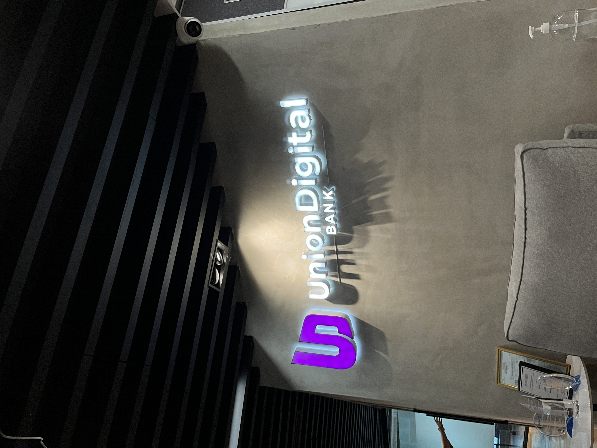

"Aim for the Moon, even if you miss it. You will always be a Star"
10-15 Years in the FUTURE: Leading my own tech company or as their CTO.

My Future Car: Only the biggest and most reliable for the CTO.
My Pretty Girlfriend: Support and love.

This is just the Start: Building a successful career in tech and being hired in more Corporations.